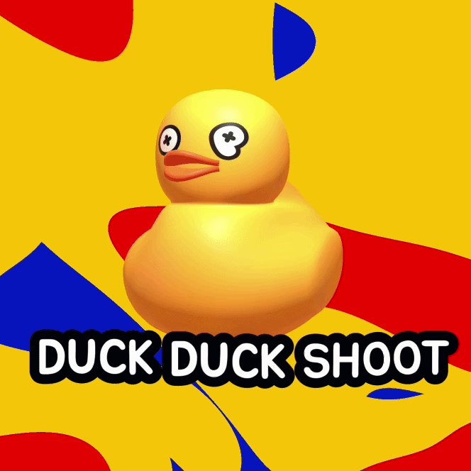
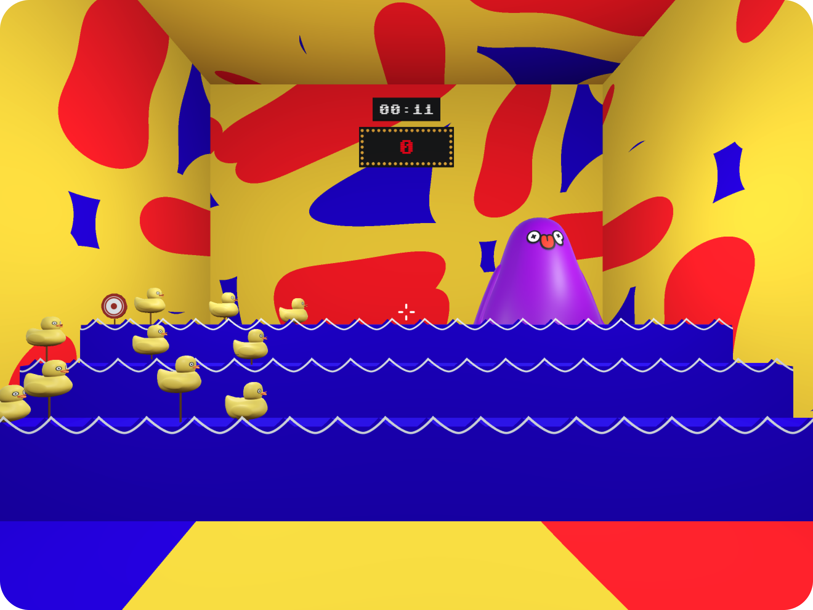
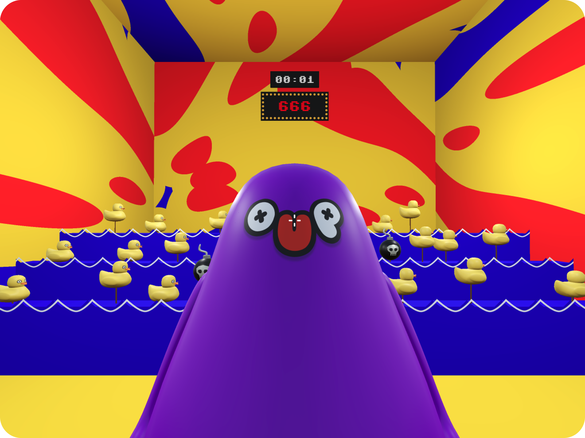

Own three colours
Yellow carries the duck and carnival warmth, while saturated red and blue turn every surface into a bold, repeatable graphic pattern.
Building a loud, instantly recognizable carnival identity around one very silly duck.

A compact brand system gives this browser shooter the energy of a chaotic carnival booth before the player fires a single shot.
The branding leans into the game’s deliberately silly premise instead of polishing away its weirdness. A toy-like duck mascot, oversized organic shapes, and a tightly limited primary palette create an identity that feels immediate, playful, and just a little overstimulating.
Yellow carries the duck and carnival warmth, while saturated red and blue turn every surface into a bold, repeatable graphic pattern.
The wide-eyed duck is the visual anchor across the cover and game world, giving the project an unmistakable face.
Rounded display lettering and a heavy outline make the title feel friendly, readable, and sturdy enough to sit over the busy artwork.
The same palette, abstract pattern, mascot styling, and high-contrast forms move directly from promotional artwork into the 3D booth, keeping the small project visually cohesive.


A distinctive, reusable identity that makes a tiny arcade shooter feel like its own complete world.
Play on itch.io ↗